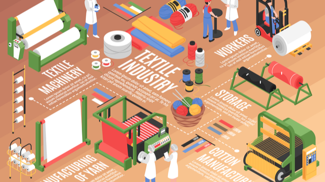

上游
紡織產業鏈上游為紡織品的原物料，如石化原料，經製造成尼龍纖維、聚酯纖維、嫘縈纖維、碳纖維等人纖產品後，再紡成紗線，再將紗線織造成布匹，經漂白、染色、印花、塗佈、
整理等染整程序，裁製縫合為成衣製品或其他相關紡織商品。

中游
紡織又可進一步區分為紡紗
與織造
兩個步驟，紡紗是由粗紗轉化為細紗，紗線送至工廠後，再將紗線插至紡織機台的運作軸心上，將紗線向上抽離並送至紡織機。接著為織造步驟，由紡織機器內梭子來回穿梭，即可送至下游廠商進行後段加工處理。


下游
紡織業下游產業有染整、成衣業與其他居家織品業。染整是紡織產業最耗能及耗水的一環，但也是
提供紡織品產品差異化和附加價值的重要環節，
近年來廠商逐漸提升染整技術，來讓染整可以朝更加環保低碳的方向發展。
成衣及
居家織品業
為紡織業下中下游之中加工層次與附加價值最高者。